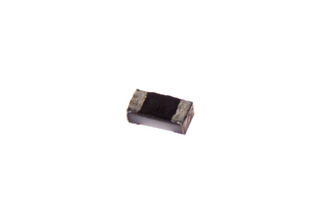
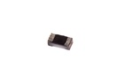
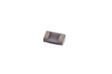

SMD (0402) 1M Ohm Resistor - R42105

Summary
Name: SMD (0402) 1M Ohm Resistor
ID: RESE-0402-X-O105-01
Hex ID: R42105
WebPage: https://github.com/oomlout/oomlout-OOMP/wiki/RESE-0402-X-O105-01
Short URL: http://oom.lt/R42105
Revision History: https://github.com/oomlout/oomlout-OOMP/blob/master/parts/RESE-0402-X-O105-01/
| Type |
Size |
Color |
Description |
Index |
RESE
Resistor |
0402
SMD (0402) |
X
|
O105
1M Ohm |
01
|
Images


About
This part is awaiting a description.
Specifications
| Info |
Value |
| Type |
Resistor |
| Size |
SMD (0402) |
| Description |
1M Ohm |
| Width |
0.5 mm |
| Length |
1.0 mm |
| Number of Pins |
2 |
Extra Details
Spotted a mistake, want to add more? Let us know oomp@oomlout.com
All images and resources are licensed [CC BY-SA] unless otherwise stated (ie. the datasheets)